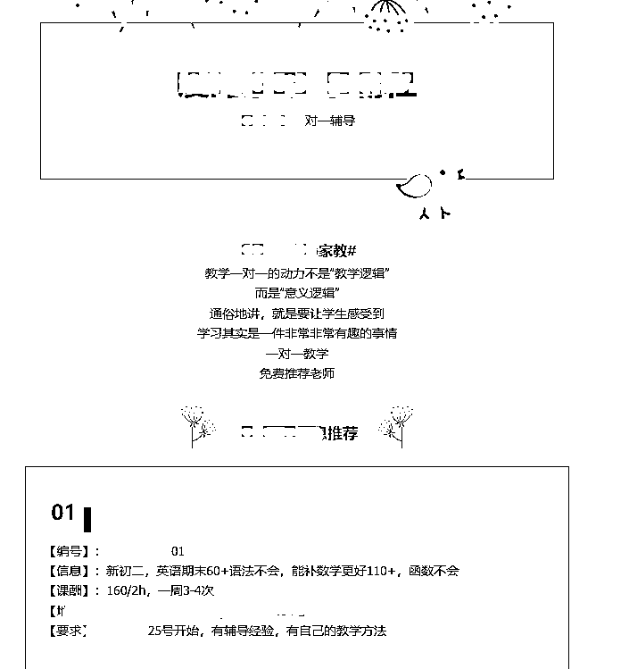
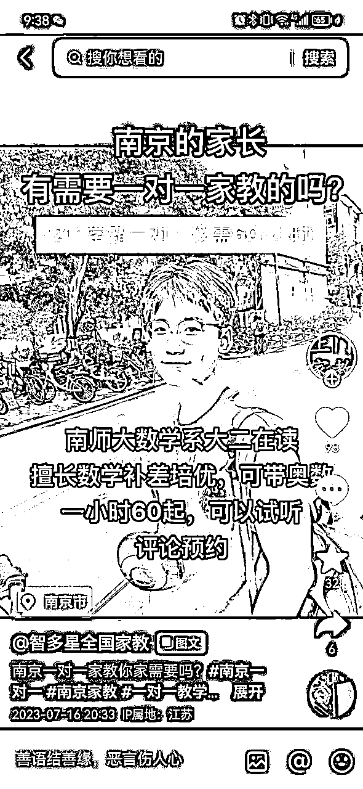
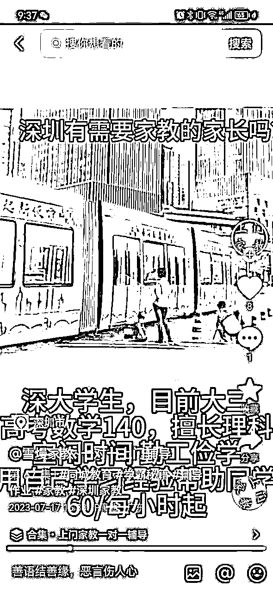

来源：https://l45krcw9v3.feishu.cn/docx/TgYYdRwBdoY1IpxurtrchCKCnog
大家好，我是九歌。自媒体创业者，专注互联网项目及同城流量。最近跑通了一个比较冷门但前景巨大的项目 —— 同城家教中介。操作一个月，变现7000多，最高一单达720。今天分享整个项目流程。
家教中介这个项目，没有去了解的时候觉得没什么，但是真正入局去操作的时候，发现，已经有人有团队在很久以前就开始操作了，特别是双减之后，市面上的培训机构没能生存，但是，家长的需求一点都不会减，更是加深了对家教的需求。
而且随着近年来中高考越来越卷，家长越来越焦虑，对家教的需求更高。所以，这也是我入局的原因之一。
家教中介简单来说，就是一手握着教师资源，一手握着家长资源，我们从中间匹配家长需求，对接家长和老师，达成交易，我们从中赚取信息费。
中介放在很多行业都可以行得通。
5月份刷视频号和抖音号，发现同城家教的这一类账号。内容制作非常简单，但是评论区都是家长在问怎么联系多少钱，当时我看到就觉得这个需求也太高了吧。不过当时也没有多在意。
后来刷生财风向标，发现有不少伙伴也注意到了这一件事。
一般来说，一个项目在生财出现的频率高了，那说明这个项目是有一定的可行性的。
但是生财还没有这样的帖子，只能自己去摸索了。
然后专门到视频号抖音公众号搜了一下，发现这个需求是真的高，家长一个个都在评论区问怎么联系，怎么补习，多少钱。可以想象这需求是多么的旺盛。
当时还担心违反双减政策，刚好我的一个初中同学是做家教这块的，以前是机构老师，双减之后就做家教了，根据他往年晒图，收益还非常高，于是就联系起我这多年未联系的同学。
就这样，跟同学了解了他们做家教的流程。但是我这同学对中介这块还不是很熟悉，他的生源大多都是转介绍的多。但好在给了我很多信息，也加强了我对这个项目的信心。
然后他就把我拉进了一些家教群，然后接下来一周就研究整个流程，养号，搭建私域。
同行是最好的老师，想要了解整个流程，那向同行学习那就是最简单的方法。
先根据关键词搜索，加了几个同行，然后把自己塑造成家长，询问相关的一些内容，获取一些相关信息。其中有位同行还提到了深圳，原来自己微信的地区还没改，于是顺势改了。
加了几个同行后，原来有的也会收家长的信息费，有的给家长是免费的。最后我选择的方案是，家长免费，收取老师的信息费。
同时获得了很多模板以及话术流程，基本上想了解的都了解了。
微信我直接用的个人号，因为我朋友直接拉我进群了，为了方便，也就没有换其他号了。而且我个人号是直接用我的姓名的，这样也没有太大的反差。
因为加了几个同行，于是前期发圈的素材也就有了。同行怎么发的朋友圈，我就怎么发。
图片：刚开始就发这俩图中的一个就行
文案：假期辅导火热预约中，考虑假期辅导的家长可以私聊我物色老师了
同行的朋友圈基本分为三种内容，一种是家教信息，一种是老师信息，一种是营销信息。
同行的朋友圈基本分为三种内容，一种是家教信息，一种是老师信息，一种是营销信息。
为了打造一个活生生的人设，而不是一个冷冰冰的中介，我的朋友圈多了一些生活气息。
做私域运营，微信标签要打好，这样可以区分每一个人都是怎么来的，是什么角色，方便群发或者发朋友圈的时候可以选择性发。
基本上这个项目我分为五个标签：
A.家教老师:用来标注是老师的，朋友圈发布家长信息可以选择性可见
B.家长：用来标注家长的
C.小学生：给家长做标签的时候会多加一个他孩子的年级标签，方便以后多次变现
D.中学生：同上
E.高中生：同上
因为我也做同城流量，所以这些流量为了后续的变现，我都打上标签，也方便营销选择。
至此，微信的搭建已经完成，接下来就是引流了。
抖音和视频号刚发作品没多久，就有家长咨询了。顺势引流了家长了解家长需求后，就在我朋友的群里发家长需求，后来发现没有老师接。才了解到，群里的基本都是专职家教，课时费要求较高。
但我用的是大学生家教引流的，课时费较低，性价比高。所以刚开始几个家长没能转化，所以接下去就开始引流老师资源。
但我就用了俩办法，就解决了教师端的问题。
刚开始做一个项目的时候，虽然你知道这个项目怎么做，但是操作的时候肯定会有很多问题，所以，这个时候找一个了解这个操作流程的人来合作那是最好的。
我的第一人选其实是我同学，但是他做家教赚得实在是太多了（一次课俩小时450左右，在南宁这边月入3万+），而且他不太了解家教中介的具体操作流程，他那基本是专职家教的资源，所以他没有想做。
所以就找在校大学生合作，想着以后还可以合作其他的同城项目。
于是就在小红书抖音去搜索去找。刚好找到一个西大研究生，看了下他往期的内容，生活居多，让人有信任感，于是就联系沟通，最后形成了合作。
在校大学生在大学生家教中有一定的信任感，可以做为一个背书，所以对接老师这块非常顺利。
我有在做同城流量，目前已经有7000+的同城流量，所以在引流这块更加的顺畅。我的很多项目都是持续性的，同城家教这块也是在同城流量的基础上开始进行的。其他的同城项目也在推进中，后续分享。
在研究同行的时候发现，同行在做公众号，而且基本上模板一样。
我也有一个同城的公众号，于是就参照同行的公众号编辑发了一个推文。引流来了不少的老师和家长。

而且看文章数据，很多人转发，有的大学生还介绍他的同学过来参与家教。所以说，同城流量这块，很稳定。
这个方法我没用，只是去测试了一下，因为我的家教老师流量很稳。
非常容易添加，只需要把自己塑造成一个老师就可以了。
QQ搜索 城市 + 家教 比如 南宁家教，就会有很多群，直接申请添加。
大部分都是禁言的，如果不是禁言的，你呆个几天，然后发个招募信息，把条件放低，然后课酬提高，就会有很多老师加你了。然后你说刚有老师接了，等下看看家长那边怎么回复。
如果是禁言的，你就挨个加QQ，然后再沟通，这个自行去执行就可以了。
基本上以上几个方法就有足够的教师资源了，只要有基础的大学生家教，他们会转介绍更多同学来你这的。关键还是引流家长流量。
每次添加老师后，给老师打上标签，标注好老师可以教什么科目，哪个年级段。
并且让老师发下简历，这样你可以把老师的简历发朋友圈，也可以用来发抖音，为了好看，也可以做一个图片模板，然后把老师的信息做成图片，发朋友圈更高端。
可以把老师资料弄成一个飞书文档，方便管理。这个都是要根据自身喜好来进行管理就行。
这个标签和备注要做好。
引流家长有做三种方式，一种方式是同城流量转化，一种是抖音引流，一种是同城流量推广。
主要是前两种方式，最后一种是找有本地流量的人去付费推广，目前只测试过一次，效果不佳，后续测试完再做介绍。
上面有提到，我本身有在做同城流量，做个公众号推文，在末尾贴一个微信号二维码就可以了，就是同城流量的多次变现。只要有同城流量，后续还可以做很多的变现，后续再分享同城流量。
抖音引流是目前最主要的流量来源，也是比较精准的。可批量复制。
昵称：这个昵称一定要取到，既可以做SEO也可以做截流。
城市（以市为单位）+ 家教 + 姓 + 老师 比如 深圳家教王老师
城市（以市为单位）+ 一对一家教 比如 深圳一对一家教
背景没有太多的要求，也不要放营销信息，最多就是你当地的地标建筑为背景就行，或者直接不要设置。
新号不要写太多内容，写太多会被抖音给吞掉。
简单点 ： 城市（以市为单位）+ 一对一家教 ；全城覆盖，勉F试课
比如： 深圳一对一家教，全市覆盖，勉F试课
置顶放三个视频，三联屏，三联屏的联系方式填自己微信的电话号码。
测试过了，写微信没有电话号码引流的多，可能与年纪有关。
私信也是，回复微信号，加的人比例更少，而电话的会更多，所以大家留信息的时候要留电话。
内容这块有几种内容方向，一种是家教内容，一种是本地教育咨询，三是本地家长关心的热点
很多人都说要做账号垂直，其实账号垂直的底层是用户垂直，只要定位到本地家长喜欢看的内容，我们就可以成为是垂直内容。
可以想一下，一个想要请家教的家长，难道仅仅关心家教的问题吗 ？是否关心升学的问题 ？是否关心学区的问题 ？是否关心教育的问题 ？
只要用户垂直，就是垂直内容。把账号搭建好，你发内容有本地流量，别人就知道你是做家教的。
所以内容方向基本上就是家教内容，也就是带有家教钩子的图文或者视频，就是讲我们有家教老师，价格很低，快点来报名吧。
第二就是本地家长关心的热点。比如最近中高考的情况，中考情况，各个市初中高中的介绍……
还有就是张雪峰关于教育的看法，这些都可以。我用张雪峰得一个图文引流20来个精准用户。
这是最简单的，也是目前大多数人在用的。
很多人都看到别的账号内容都是一些小哥哥小姐姐以为是真的教师的照片，其实都是网图，都是从百度小红书里来的。
直接百度或者小红书搜索 女大学生 男大学生 女大学生上课 男大学生上课 等关键词。
建议小红书，里面的图片更加的好看而且清晰。
找到图片后，可以直接长按下载，不过下载的有水印，到美图秀秀用消除笔消除就可以了。
或者直接复制链接，微信搜索小程序 “去水印” 直接粘贴也可以去水印。
然后根据个人喜好，用美图秀秀或者黄油相机做编辑就可以了。



图片文案基本上是这几种：
“城市” + 的叔叔阿姨你们好，我是XX的研究生，暑期留下一对一，60/每小时起
“城市” 有需要jia教的叔叔阿姨吗？ XX学生目前大三，高考数学（这里填科目，基本上女生的就写语文英语，男生就数理化）139分，擅长XXX 60/每小时起
直接把图片增加特效做成视频，加入一些转场。这样一张图片就可以做俩内容了，轻轻松松。
视频也可以自己出镜，也可以去做配音混剪。
这种就不展开了，因为目前我用的就是图文，还有把图片加特效制作成视频。
发布的时候，不要写文案，写文案容易违规。你就添加标签就行，基本上标签就这几个
#同城教育 #一对一私教 #城市（比如深圳） #“城市” + 家教（比如深圳家教）
地址定位：定位到你们市最好的那三所初中和高中，轮流定位或者就定位一个就行
我向做家教的朋友了解到，越好的学校补课的人越多，因为好学校总有学习差的，但是在好学校学习差就得卷，差学校本来就差，差点无所谓。
上面说到昵称方便截流，这里也说一下截流。
所谓截流就是到一些同城的不同行业的类型账号下评论。因为你的账号昵称就是城市 + 家教，而同城的账号大多数都是同城的流量，所以多关注一些不同行业的账号，当他发作品的时候，你就去点赞评论，就是夸她。
我就有一个客户是做门窗的，起初是他来我这里评论，然后我也关注她去她那里评论，每次都赞扬她敬业，专注，祝他生意兴隆，后来她找我加联系方式，她孩子要补课，这就成交了一个客户。
只要不是竞争关系的，多去别人的账号下留言，只要是正面的，他们也都不会介意的。可以有来有回。
家教这个还是有点敏感的，因为双减的原因，但是都可以通过人工去避免。
测试下来有些词尽量不要用
1、家教 — 不要出现在文案，图片上尽量用 jia教，可以用陪学替代
2、独特方法 —— 这个会被判定是虚假宣传
3、勤工俭学 —— 这个发布多了会被判发布虚假兼职信息
4、提分 —— 这个不要出现在文案和图片，容易违规
虽然看到很多账号用同样的词没事，但是我关注的几个账号都因为这样的问题被禁言，后来再观测，这些字词也改了。
我的一个账号也收到了两次违规，第一次禁言3天，一次禁言7天。
其他的再更新，目前测试下来就这几个的违规
转化需要做的事情很少，家长加你微信后，简单的问几个问题，然后就把基本资料填写模板发给家长就行。
①打招呼
家长，您好，是需要找家教吗 ？我们这边有大学生家教和专职家教。大学生家教都是 XX XX XX 大学的（这里写你本市最有名的三所大学就行，不要担心学校不好，本地最好的就行了）勤工俭学做家教，专职家教都是有多年经验的。请问孩子几年级呢 ？
②询问其他问题
如果不忙可以多问几个问题，忙的话直接丢出第三的模板，问题基本是
请问需要补哪一个科目呢 ？
平常成绩如何 ？
家住哪里呀 ？
对老师有什么要求呢 ？
③模板填写
家长称呼：
联系电话：
孩子年级：
科目：
成绩：
孩子性别：
课酬：可接受课酬，按小时算，一次课俩小时
老师性别：
对老师的要求：
辅导时间：周几 几点到几点（或者上午还是下午）
上门地址：
基本上就是这些信息，对给家长。
然后说：家长您好，方便的时候填下这些基本信息，更方便为您匹配老师哦
这个在前期人少的时候不做无所谓，但是人多了，需要管理，那就需要做表格了。建议用飞书文档，建个表格，每一个家长需求都编一个号，然后每天更新状态，这样就知道哪个家长联系了，哪个家长没有联系。
也方便老师来查找，不然全部发朋友圈或者社群里发，很容易信息就遗漏了。基本上表格包含收集来的信息（家长的联系方式不要放），再加上一个对接情况和备注就可以了，方便老师查找，方便自己管理。
基本上花了几分钟向家长了解孩子的情况之后，把收集来的信息，把联系电话去掉，然后就可以发朋友圈了，选择教师那个标签可看来展示。
然后在评论区放上飞书文档链接，引导教师查看。
也可以把家长需求家长编号发给你的合作伙伴，可以快速匹配。
当老师有意向的时候，就可以把老师的简历发给家长看。如果家长不满意，那就换老师。
如果家长满意了，这个时候就要跟老师说信息费的问题。
各个城市基本上不一样，可以自己找本城市的，假装老师混进去然后了解信息费标准。
当然，如果后续引流的老师多了，老师发完简介就可以把信息费标准表发给他看了，合适就继续合作，不合适后续再说了。
接下来就是对接家长安排上门试课了。
基本上家长都要求试课，但是试课之后基本都成交。
收完信息费之后，就直接把家长的微信推给老师。
在此之前跟家长说：好的，我们老师一会加您微信，和您详细沟通接下来孩子的补课安排，您一会通过一下。有任何问题都可以及时沟通哦。
接下来就是老师和家长对接试课，试课之后，要及时的和老师以及家长沟通，问家长老师怎么样，是否满意呢 ？
问老师，今天试课怎么样 ？家长是否友善，孩子表现如何 ？
这个时候你就知道试课结果了，如果成功，那这个信息费就可以收入囊中了。
如果不成功，这个信息费不着急还，继续为家长找家教，避免飞单。
但我这边操作下来都成功了，我朋友也说，家教这个飞单基本没有，因为家教圈子不大，飞单很容易臭名声。而且如果你和老师相处好，也可以避免这个问题。
所以，做服务，与人和善。
这个项目是一个需要积累的项目，也是可行性非常高的项目，而且这个家长流量特别的有价值。
拥有的家长粉，那么后续孩子的考试，上学，志愿都可以进行转化。
而且这个项目不能着急，基本上操作前10天没有太多的转化，因为这个时候你的资源还没有到位。我的收益基本上是后面这十多天才有的。
所以，如果你想操作这个项目，不要急于求成，一步一个脚印的去实操。
积累十天半个月你会发现，你慢慢的开始有转化了，而且转化的效率和金额越来越高。
完整版拆解到此结束，如果在读的你对该项目有什么更好的玩法或者分享，欢迎交流。
我是九歌，2023一起生财有术！